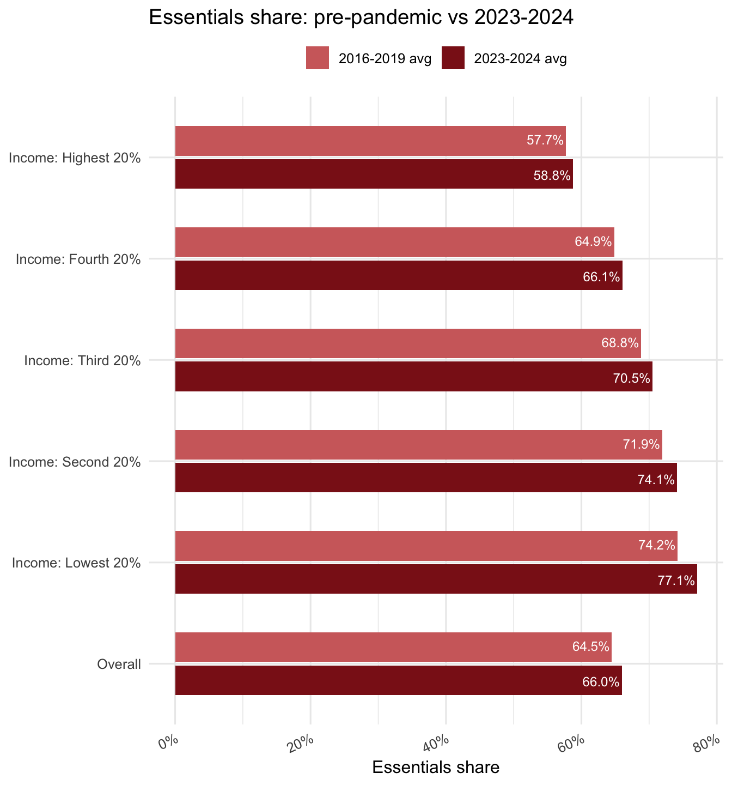
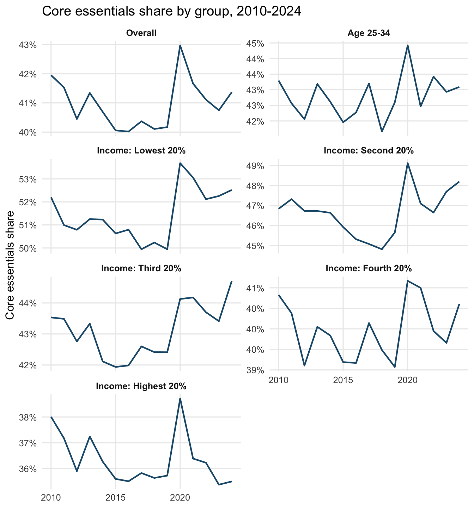

Show code
library(tidyverse)
cex <- read_csv("data/cex_data.csv") %>% filter(demographics_text != "Age of reference person")library(tidyverse)
cex <- read_csv("data/cex_data.csv") %>% filter(demographics_text != "Age of reference person")Since the pandemic and the recovery, people have been very pessimistic about the economy. There are many arguments for why this ‘vibecession’ happened and continues, including higher interest rates (Bolhuis et al. 2024), the struggle people face to ensure that their incomes and wages keep up with inflation (Guerreiro et al. 2024), that higher inflation also can make housing harder to afford even if incomes keep up (MacGee and Yao 2025), and the difficulty of planning under inflation (Stantcheva 2024). But one other thing might matter: people in the bottom half of the income distribution are spending a higher percent of their expenditures on essentials.
The Bureau of Labor Statistics Consumer Expenditure Survey (BLS CEX) is a nationally representative survey of consumer units that reports annual spending by detailed category. It is the primary federal source for household expenditure patterns and is widely used to understand cost burdens, to inform CPI weights, and to benchmark how budgets shift over time. The CEX makes it possible to compare budget shares across time and across demographic groups such as income quintiles.
The latest data for 2024 came out in December 2025, delayed because of the government shutdown. This data can help explain why people’s experiences of the economy have been poor even when aggregate income growth keeps pace with inflation. A rising share of budgets devoted to necessities will make households feel worse off.
We define core essentials as ‘food at home’ and ‘housing.’ We also check a broader essentials category by adding healthcare and transportation to the core set. Budget shares are computed by summing category expenditures and dividing by total expenditures (“average annual expenditures”) for each group across years.
core_essentials <- c("Food at home", "Housing")
essentials <- c(core_essentials, "Healthcare", "Transportation")
totals <- cex %>%
filter(item_text == "Average annual expenditures") %>%
select(year, demographics_text, characteristics_text, total = value)
build_share <- function(items, label) {
cex %>%
filter(item_text %in% items) %>%
group_by(year, demographics_text, characteristics_text) %>%
summarise(essentials_value = sum(value, na.rm = TRUE), .groups = "drop") %>%
left_join(totals, by = c("year", "demographics_text", "characteristics_text")) %>%
mutate(
essentials_share = essentials_value / total,
essentials_type = label
)
}
essentials_share <- bind_rows(
build_share(core_essentials, "Core essentials"),
build_share(essentials, "Essentials")
)
group_definitions <- tibble(
group = c(
"Overall",
"Age 25-34",
"Income: Lowest 20%",
"Income: Second 20%",
"Income: Third 20%",
"Income: Fourth 20%",
"Income: Highest 20%"
),
demographics_text = c(
"Quintiles of income before taxes",
"Age of reference person",
rep("Quintiles of income before taxes", 5)
),
characteristics_text = c(
"All Consumer Units",
"Reference person from age 25 to 34",
"Lowest 20 percent income quintile",
"Second 20 percent income quintile",
"Third 20 percent income quintile",
"Fourth 20 percent income quintile",
"Highest 20 percent income quintile"
)
)
summarize_group <- function(demo_label, char_filter) {
essentials_share %>%
filter(
demographics_text == demo_label,
characteristics_text %in% char_filter
) %>%
group_by(essentials_type, characteristics_text) %>%
summarise(
share_2019 = essentials_share[year == 2019][1],
share_2024 = essentials_share[year == 2024][1],
change_2019_2024 = share_2024 - share_2019,
avg_2016_2019 = mean(essentials_share[year %in% 2016:2019], na.rm = TRUE),
avg_2023_2024 = mean(essentials_share[year %in% 2023:2024], na.rm = TRUE),
change_2016_2019_to_2023_2024 = avg_2023_2024 - avg_2016_2019,
.groups = "drop"
)
}
format_table <- function(df) {
df %>%
mutate(across(where(is.double), ~ scales::percent(.x, accuracy = 0.1))) %>%
rename(
type = essentials_type,
group = characteristics_text,
`2019` = share_2019,
`2024` = share_2024,
`chg 19-24` = change_2019_2024,
`avg 16-19` = avg_2016_2019,
`avg 23-24` = avg_2023_2024,
`chg avg` = change_2016_2019_to_2023_2024
)
}overall <- summarize_group(
"Quintiles of income before taxes",
"All Consumer Units"
)Essentials are modestly higher in 2024 than 2019 for overall consumer units, and the 2023-2024 average sits above 2016-2019.
income <- summarize_group(
"Quintiles of income before taxes",
c(
"Lowest 20 percent income quintile",
"Second 20 percent income quintile",
"Third 20 percent income quintile",
"Fourth 20 percent income quintile",
"Highest 20 percent income quintile"
)
)
income_order <- c(
"Lowest 20 percent income quintile",
"Second 20 percent income quintile",
"Third 20 percent income quintile",
"Fourth 20 percent income quintile",
"Highest 20 percent income quintile"
)The lowest two income quintiles show the largest increases since 2019, while the highest quintile is flat to slightly down. The overall pattern suggests a rising essentials burden concentrated in lower- and lower-middle-income households. The figures below show both the 2019 vs 2024 comparison and the pre- vs post-pandemic averages.
core_share <- essentials_share %>%
filter(essentials_type == "Core essentials") %>%
inner_join(group_definitions, by = c("demographics_text", "characteristics_text"))
core_bar <- core_share %>%
filter(year %in% c(2016:2019, 2023:2024)) %>%
mutate(period = if_else(year <= 2019, "2016-2019 avg", "2023-2024 avg")) %>%
mutate(period = factor(period, levels = c("2016-2019 avg", "2023-2024 avg"))) %>%
group_by(group, period) %>%
summarise(avg_share = mean(essentials_share, na.rm = TRUE), .groups = "drop")
ggplot(
core_bar,
aes(x = factor(group, levels = group_definitions$group), y = avg_share, fill = period)
) +
geom_col(position = position_dodge2(width = 0.7, reverse = TRUE), width = 0.65) +
geom_text(
aes(label = scales::percent(avg_share, accuracy = 0.1)),
position = position_dodge2(width = 0.7, reverse = TRUE),
hjust = 1.05,
color = "white",
size = 3.2
) +
scale_y_continuous(labels = scales::percent_format(accuracy = 1)) +
scale_fill_manual(values = c("2016-2019 avg" = "#9EC7E0", "2023-2024 avg" = "#1F5A7A")) +
labs(
title = "Core essentials share: pre-pandemic vs 2023-2024",
x = NULL,
y = "Core essentials share",
fill = NULL
) +
coord_flip() +
theme_minimal(base_size = 12) +
theme(
legend.position = "top",
axis.text.x = element_text(angle = 25, hjust = 1)
)
The next chart repeats the comparison for the broader essentials basket (adding healthcare and transportation).
essentials_share_full <- essentials_share %>%
filter(essentials_type == "Essentials") %>%
inner_join(group_definitions, by = c("demographics_text", "characteristics_text"))
essentials_bar <- essentials_share_full %>%
filter(year %in% c(2016:2019, 2023:2024)) %>%
mutate(period = if_else(year <= 2019, "2016-2019 avg", "2023-2024 avg")) %>%
mutate(period = factor(period, levels = c("2016-2019 avg", "2023-2024 avg"))) %>%
group_by(group, period) %>%
summarise(avg_share = mean(essentials_share, na.rm = TRUE), .groups = "drop")
ggplot(
essentials_bar,
aes(x = factor(group, levels = group_definitions$group), y = avg_share, fill = period)
) +
geom_col(position = position_dodge2(width = 0.7, reverse = TRUE), width = 0.65) +
geom_text(
aes(label = scales::percent(avg_share, accuracy = 0.1)),
position = position_dodge2(width = 0.7, reverse = TRUE),
hjust = 1.05,
color = "white",
size = 3.2
) +
scale_y_continuous(labels = scales::percent_format(accuracy = 1)) +
scale_fill_manual(values = c("2016-2019 avg" = "#D16B6B", "2023-2024 avg" = "#8B1A1A")) +
labs(
title = "Essentials share: pre-pandemic vs 2023-2024",
x = NULL,
y = "Essentials share",
fill = NULL
) +
coord_flip() +
theme_minimal(base_size = 12) +
theme(
legend.position = "top",
axis.text.x = element_text(angle = 25, hjust = 1)
)
The line charts show that core essentials shares rose during the inflation surge and have been coming down in recent years, though many groups remain above pre-pandemic levels.
core_line <- core_share %>%
filter(year >= 2010) %>%
mutate(group = factor(group, levels = group_definitions$group))
ggplot(core_line, aes(x = year, y = essentials_share, group = group)) +
geom_line(color = "#1F5A7A", linewidth = 0.8) +
scale_y_continuous(labels = scales::percent_format(accuracy = 1)) +
facet_wrap(~ group, ncol = 2, scales = "free_y") +
labs(
title = "Core essentials share by group, 2010-2024",
x = NULL,
y = "Core essentials share"
) +
theme_minimal(base_size = 12) +
theme(
strip.text = element_text(face = "bold"),
panel.grid.minor = element_blank()
)
The 2020-2024 period marks a clear upward shift in core essentials, especially for lower-income households, consistent with a “vibescession” narrative where everyday bills rise faster than perceptions of income gains. Policy responses that reduce housing costs, stabilize food prices, and expand access to affordable healthcare and transportation would directly address the areas where cost burdens are rising most, while also speaking to the lived experience of people who find themselves struggling in this economy.